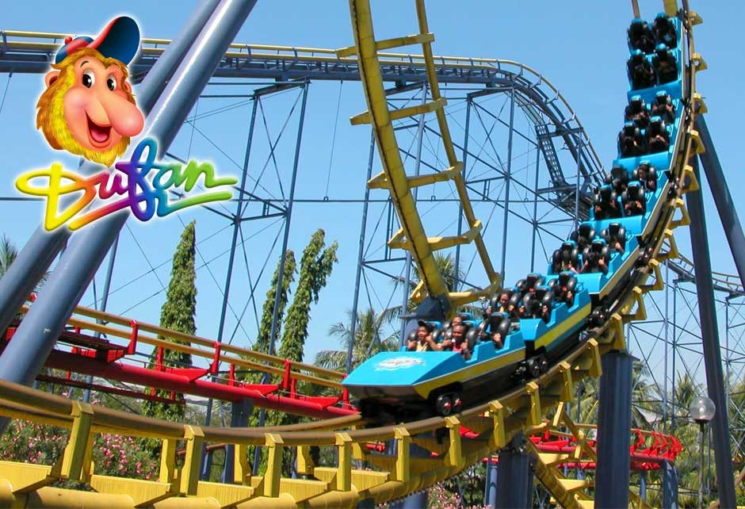

Taman Mini Indonesia Indah

Taman Mini Indonesia Indah (disingkat TMII; sebelumnya Taman Mini "Indonesia Indah" dengan tanda kutip) merupakan suatu taman hiburan bertemakan kebudayaan Indonesia di Jakarta Timur, DKI Jakarta, yang memiliki area seluas kurang lebih 147 hektare[1] atau 1,47 kilometer persegi. Taman ini merupakan rangkuman kebudayaan bangsa Indonesia, yang mencakup berbagai aspek kehidupan sehari-hari masyarakat 26 provinsi Indonesia (pada tahun 1975) yang ditampilkan dalam anjungan daerah berarsitektur tradisional, serta menampilkan aneka busana, tarian, dan tradisi daerah.
Ancol

Taman dan pantai merupakan wahana hiburan yang menawarkan kesegaran suasana pantai bagi semua kalangan dan usia. Pantai dan Taman memiliki 5 pantai (Pantai Festival, Indah, Elok, Ria dan Carnival Beach Club) dan Danau Impian, sepanjang kurang lebih 5 km, dengan promenade sepanjang 4 km. Terdapat area Beach Park di pantai Lagoon yang berisi permainan watersport seperti Banana Boat, Donut Boat, Kayak, Swan Pedal Boat dan Permainan Aqua Fun.
Dufan
Dunia Fantasi terbagi dalam beberapa kawasan dengan tema tersendiri dan ciri khas masing-masing kawasannya. Pembagian kawasan ini ditujukan untuk membangkitkan imajinasi pengunjung yang diharapkan dapat merasakan sensasi Fantasi Keliling Dunia, Hikayat, dan Modern Dufan Era yang dimulai dari kawasan Jakarta, Amerika, Istana Boneka, Indonesia, Eropa, Asia, Misteri, Petualangan, Yunani, Kidz Fantasy, dan Dunia Kartun.